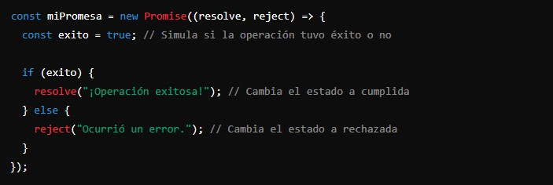
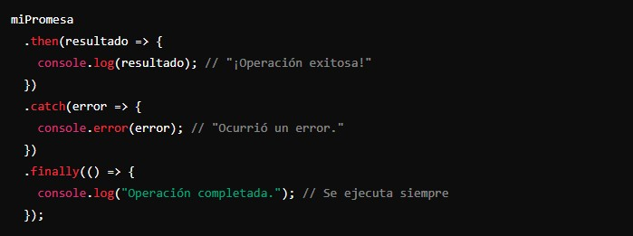
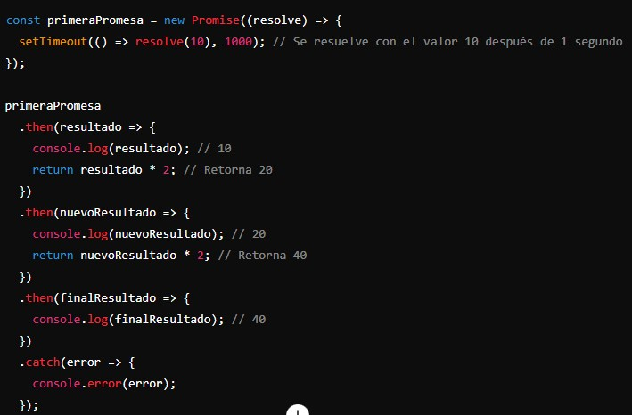
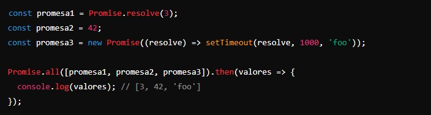
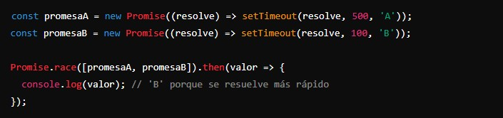
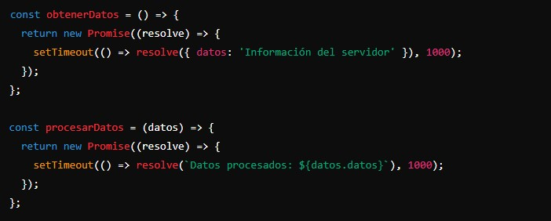
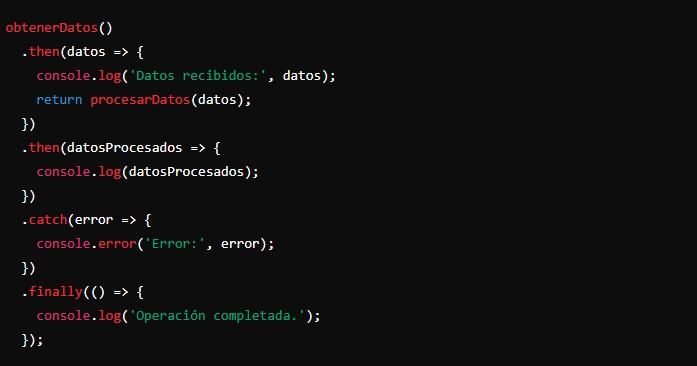

Una promesa es un objeto que representa la eventual finalización (o falla) de una operación asíncrona y su valor resultante. Es como un contrato de que algo sucederá en el futuro, y puede estar en uno de tres estados:
- Pending (Pendiente): El estado inicial, ni cumplida ni rechazada.
- Fulfilled (Cumplida): La operación se completó con éxito.
- Rejected (Rechazada): La operación falló.
- Creación de una promesa:
Para crear una promesa, usamos el constructor Promise, que toma una función con dos parámetros: resolve y reject. Estas son funciones que usaremos para cambiar el estado de la promesa.
Ejemplo:
 - Manejo de promesas:
Para manejar el resultado de una promesa, usamos los métodos then, catch y finally.
- then: Se ejecuta cuando la promesa se cumple (estado fulfilled) y recibe el valor resultante.
- catch: Se ejecuta cuando la promesa es rechazada (estado rejected) y recibe la razón del rechazo.
- finally: Se ejecuta después de que la promesa se haya cumplido o rechazado, sin importar el resultado.
Ejemplo:
 - Promesas encadenadas:
Las promesas pueden encadenarse para manejar una secuencia de operaciones asíncronas de manera ordenada.
Ejemplo:
 - Uso de Promise.all y Promise.race:
- Promise.all: Ejecuta múltiples promesas en paralelo y se resuelve cuando todas las promesas se han cumplido. Si alguna promesa se rechaza, Promise.all también se rechaza.
- Promise.race: Se resuelve o rechaza tan pronto como una de las promesas se resuelve o se rechaza.
Ejemplo:
Ejemplo:

Legibilidad: El código con promesas es más fácil de leer y entender que el código con callbacks anidados (el famoso "callback hell").
Manejo de errores: Las promesas permiten manejar errores de manera más consistente y centralizada.
Encadenamiento: Las promesas permiten encadenar operaciones asíncronas de manera ordenada y predecible.
¿Por qué usar promesas?
Estados: Pending, Fulfilled, Rejected.
Métodos: then para manejar éxito, catch para manejar errores, finally para ejecutar código independientemente del resultado.
Encadenamiento: Permite realizar secuencias de operaciones asíncronas de manera clara.
Utilities: Promise.all y Promise.race para manejar múltiples promesas en paralelo o competiciones de promesas.
En resumen:
Ejemplo:
 